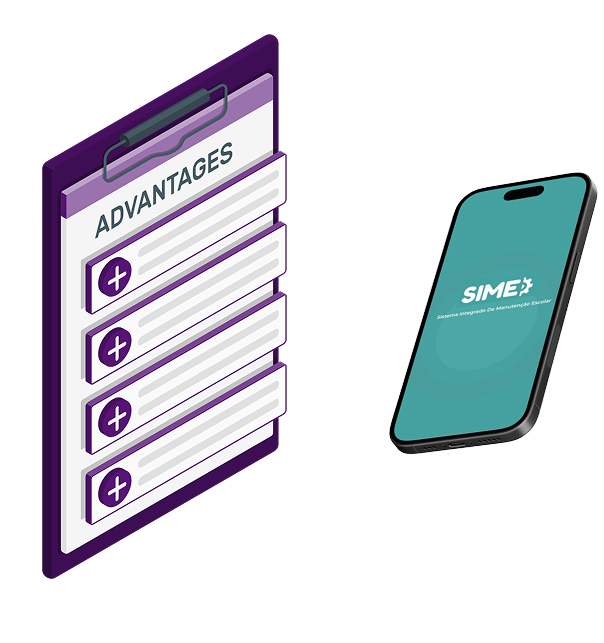
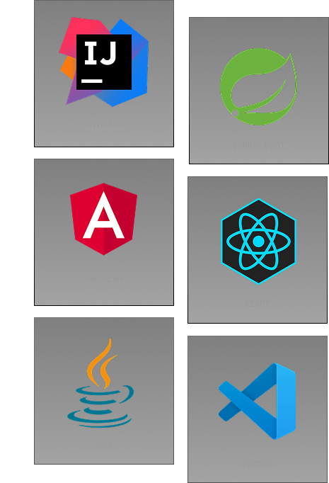

- SIME
- Nosso Software
-
O Sistema de Integrado de Manutenção Escolar (SIME) é um
sistema criado para facilitar a gestão de manutenção em
escolas.
Funcionalidades do SIME
Registrar chamados
Registre chamados rápido com descrição, data e prioridade.
Status de tarefas
Usuários acompanham ordens: pendente, em andamento ou concluída.
Cadastros de ambiente
e equipamentos
Organize a escola por áreas, salas e equipamentos.
Históricos de
manutenções
Registro do que foi feito em cada sala ou equipamento.
Perfis de usuários
Defina permissões para solicitação, execução e gestão.
Público do SIME
O SIME é ideal para instituições de ensino que precisam de mais organização, agilidade e controle no setor de manutenção.

Alguns exemplos:
- Escolas técnicas •
- Instituições públicas e privadas •
- Redes escolares com equipe de manutenção •
Seja sua escola pequena ou grande, o SIME se adapta à realidade de cada instituição.
Manutenção Escolar Digitalizada
Abandonar o papel, cadernos e planilhas é o primeiro passo para uma escola mais organizada e eficiente.
Com o SIME, você centraliza todas as ordens de serviço em um só lugar, facilita a comunicação com a equipe técnica e acompanha as tarefas em tempo real — tudo com apenas alguns cliques, pelo computador ou celular.
Tecnologia que cuida da sua escola
Garanta o seu ->
Tecnologias Utilizadas

Por que Escolher o SIME
Com uma interface simples e acessível, permite registrar ordens de serviço, acompanhar tarefas em tempo real e manter tudo organizado em um só lugar.
Funciona no computador e no celular, ajudando diretores, coordenadores e equipes técnicas a terem mais controle, agilidade e economia no cuidado com a infraestrutura escolar.
Verificar Valores
Descubra como o SIME pode transformar a manutenção da sua escola com praticidade e eficiência. Nossos planos foram pensados para atender diferentes necessidades, oferecendo tecnologia de ponta a um custo acessível.Confira agora os preços e encontre a solução ideal para você!